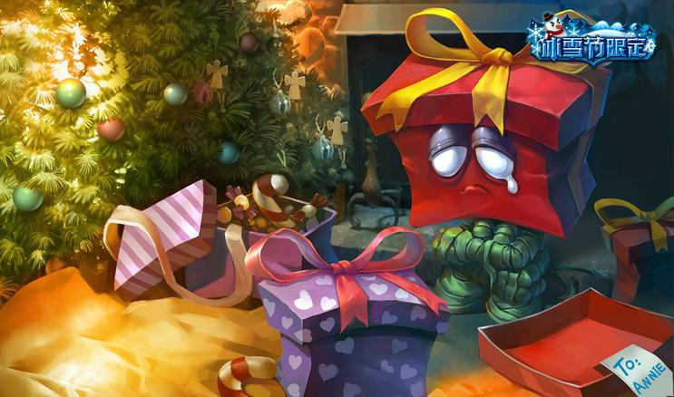

Cameron
Snyder
League of Legends is a fast-paced, competitive online game that blends the speed and intensity of an RTS with RPG elements. Two teams of powerful champions, each with a unique design and playstyle, battle head-to-head across multiple battlefields and game modes. With an ever-expanding roster of champions, frequent updates and a thriving tournament scene, League of Legends offers endless replayability for players of every skill level.

I enjoy a ton of champions in League of Legends, but the one that holds the most nostalgia for me is Amumu the sad mummy. This was one of the first champions I picked up when I started playing the game and looking back it holds a ton of memory's. When talking with friends about the game, Amumu usually comes up in one way or the other due to either the nostalgic factor for most season one veterans or because he was one of the first champions or because he was one was of the strongest champions on the release of the game. Amumu the sad mummy also has one of the funniest skins in game. Amumu in general is always sad because he has been recently reincarnated and is now looking for friends but everyone is too scared to be friends with him. Thus the creators of the game made a skin for him based on the very depressed act of re-gifting presents. As seen in the picture, Amumu looks like a re-gifted present, only making him even sader.
Gameplay
Here is a video that contains Highlights from Day 1 of the League of Legends World Championship, so you can get idea of the gameplay. Last year the prize pool for the championship was 2.2 million dollars and it is estimated that next years World Championship prize pool should hit above 5 million dollars.